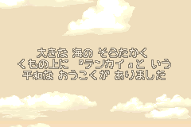

Densetsu no Stafy 2 (Japan) (Virtual Console)
SRAM 256K Save Format Spec gbakit Built-In 💾 MultiBoot
Cartridge Identity
- Game Code
AVFJ(FamilyAVF)- Header Title
STAFY 2- Maker / Revision
01/ rev0- ROM Size
- 16.0 MiB (16,777,216 B)
- Save Media
SRAM 256K- SHA-256
09b45e8b4467bdc1a518c70b525d15585665393419b0edd2099932f0c2ecf4d0
Screenshots


Link Cable & Multiplayer Communications
This title contains detected communication capabilities: 💾 MultiBoot.
Detailed protocol specifications, SIO registers, Joybus commands, and MultiBoot sequences are documented in the Link & Multiplayer Reference.
- Single-Cart MultiBoot
- Single-Cartridge MultiBoot (Download Play) client/server handler · Thumb SWI 0x25 (
0xDF25):0x22dd08,0x22ddd2,0x22def0,0x2e8680
Battery Save Format Specification
Open Full Save Format SpecDownload save-format.json
- Specification Coverage
- 4 mapped fields · 0 verified checksum(s) · Confidence: HIGH
- gbakit Built-In Support
- Built-in (AVFJ)
gbakit save verify AVFJ save.sav
gbakit save decode AVFJ save.sav
gbakit save fix AVFJ damaged.sav -o repaired.savObserved Battery Save Layout
- Fill Byte & Active Size
0xFFfill · 12,411–12,411 / 32,768 B active (entropy 0.06 bits/B)- Active Offset Ranges
0x0–0x11,0x14–0x15,0x18–0x19,0x1C–0x1F,0x23–0x1033,0x1037–0x2047,0x204B–0x3057,0x305C–0x307C, +1 more (9 total)- ASCII Magic / Headers
Stafy2 VER 007,2003/08/04 20:24:28- Observed Variable Regions
- 0 bytes across 0 spans: None
- Candidate Checksum/Counter Spans
- None
Asset Map (formatkit.asset-map.v1)
Download AVFJ-r0-57e1108d3ec3f3ff.asset-map.json.gz (353,388 B (345.1 KiB)) Verified PASS · 46.33% coverage
| Metric | Bytes / Value | Entries |
|---|---|---|
| Identified | 3,521,326 B (3.36 MiB) (20.99%) | 3,241 |
| Mapped | 0 B (0.00%) | 0 |
| Opaque | 4,251,996 B (4.06 MiB) (25.34%) | 1 |
| Unknown | 9,003,894 B (8.59 MiB) (53.67%) | 2,845 |
| Total ROM Size | 16,777,216 B (16.00 MiB) | 6,087 |
| Coverage % | 46.33% | — |
| Entries w/ Code Refs | 3,309 / 6,087 (54.36%) | — |
Top Identified Formats: compress.bios-lz77 (1,416 · 3,123,032 B (2.98 MiB)) · gfx.gba-palette (1,818 · 227,136 B (221.8 KiB)) · compress.bios-rle (3 · 146,220 B (142.8 KiB)) · compress.bios-huffman (2 · 23,682 B (23.1 KiB)) · audio.m4a-song-table (1 · 1,064 B (1.0 KiB)) · gba.rom-header (1 · 192 B)
Largest unknown Extents (Headerless / Custom Asset Candidates)
| Offset | Size | Shannon Entropy | Code Refs |
|---|---|---|---|
0x0099E354 | 2,440,016 B (2.33 MiB) | 6.912 bits/B | 1 |
0x0080936C | 1,657,792 B (1.58 MiB) | 6.450 bits/B | 0 |
0x00383A18 | 416,220 B (406.5 KiB) | 3.898 bits/B | 0 |
0x006B9E09 | 198,771 B (194.1 KiB) | 2.282 bits/B | 0 |
0x00735318 | 117,248 B (114.5 KiB) | 2.073 bits/B | 0 |
gzip -dk AVFJ-r0-57e1108d3ec3f3ff.asset-map.json.gz && gbakit map verify rom.gba AVFJ-r0-57e1108d3ec3f3ff.asset-map.json
gbakit assets export rom.gba --asset-map AVFJ-r0-57e1108d3ec3f3ff.asset-map.json -o out/Text, Fonts & Scene Data
- Primary Text Encoding
- LZ77-compressed ASCII (
13ASCII strings ·200Shift-JIS runs ·3LZ77 ASCII blocks) - Font & VWF Indicators
- VWF Width Table 1bpp Font · BIOS SWIs: BitUnPack
0x10:0· LZ770x11/12:2· Huffman0x13:1· RLE0x14/15:12 - Scene & Packaging
87ROM pointer tables (≥32 entries,8≥200) ·9relativeu32TOCs ·168OAM metasprite hits
Password System
- Save Media
- Battery-Backed (SRAM)
- Password Class
- Password UI Strings Detected (
password_ui_strings_only)
Regional Variants & Revisions (Family AVF)
- Densetsu no Stafy 2 (Japan) (
AVFJ, 16 MiB) - Sitafei De Chuanshuo 2 (China) (Proto) (
AVFC, 16 MiB)